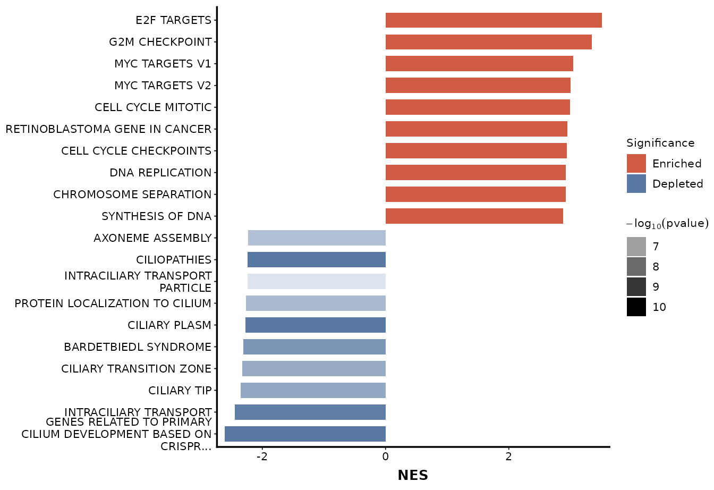

The barPlot function generates a horizontal bar plot
for visualizing gene set enrichment analysis (GSEA) results. It supports
multiple x-axis variables (e.g., NES, Count, or GeneRatio) and allows
bar coloring and transparency to be mapped by statistical significance
measures (p-value, adjusted p-value, or q-value). This function provides
a flexible and publication-ready visualization of pathway-level enrichment.
Arguments
- seDataFgsea
A
SummarizedExperimentobject containing GSEA results. The object must contain:metadata(seDataFgsea)$gseaResult: GSEA result object whose result slot contains pathway-level enrichment information.
- topN
Numeric. Number of top-ranked pathways to display. Default is
10.- breaklineN
Integer. Maximum number of characters before wrapping pathway names for improved readability. Default is
30.- alpha
Character. Variable for transparency encoding. Must be one of
'pvalue','p.adjust', or'qvalue'.pvalue: Raw p-values.p.adjust: Adjusted p-values (multiple testing correction).qvalue: q-values (alternative adjusted significance measure).
- x
Character. Variable for the x-axis. Must be one of
'NES','Count', or'GeneRatio'.NES: Normalized Enrichment Score (default).Count: Number of core enrichment genes in each pathway.GeneRatio: Ratio of enriched genes to total genes in the set.
- fontSize
Numeric. Base font size for plot text elements. Default is
8.
Value
A named list containing two components:
barPlotA
ggplot2object representing the horizontal bar plot, where:X-axis: Selected variable (
NES,Count, orGeneRatio)Y-axis: Formatted pathway names (ordered by the selected variable)
Bar color: Encodes enrichment direction or significance
Transparency (alpha): Proportional to
-log10(alpha)of the chosen statistic
tableBarPlotA
data.framecontaining the underlying plotting data with columns:original_name: Original pathway identifiers.label_name: Formatted pathway names with line breaks.NES / Count / GeneRatio: The variable used on the x-axis, depending on the selectedxparameter.alpha: Statistical values used for transparency (e.g., p-value, adjusted p-value, or q-value).neg_log_alpha: The transformed significance level calculated as-log10(alpha).alpha_value: Rescaled transparency value ranging from 0–1, used for plotting alpha intensity.
Examples
data("sig2Fun_result")
barPlot(seDataFgsea = sig2Fun_result)
#> $barPlot

#>
#> $tableBarPlot
#> original_name
#> HALLMARK_E2F_TARGETS HALLMARK_E2F_TARGETS
#> HALLMARK_G2M_CHECKPOINT HALLMARK_G2M_CHECKPOINT
#> HALLMARK_MYC_TARGETS_V1 HALLMARK_MYC_TARGETS_V1
#> HALLMARK_MYC_TARGETS_V2 HALLMARK_MYC_TARGETS_V2
#> REACTOME_CELL_CYCLE_MITOTIC REACTOME_CELL_CYCLE_MITOTIC
#> WP_RETINOBLASTOMA_GENE_IN_CANCER WP_RETINOBLASTOMA_GENE_IN_CANCER
#> REACTOME_CELL_CYCLE_CHECKPOINTS REACTOME_CELL_CYCLE_CHECKPOINTS
#> REACTOME_DNA_REPLICATION REACTOME_DNA_REPLICATION
#> GOBP_CHROMOSOME_SEPARATION GOBP_CHROMOSOME_SEPARATION
#> REACTOME_SYNTHESIS_OF_DNA REACTOME_SYNTHESIS_OF_DNA
#> GOBP_AXONEME_ASSEMBLY GOBP_AXONEME_ASSEMBLY
#> WP_CILIOPATHIES WP_CILIOPATHIES
#> GOCC_INTRACILIARY_TRANSPORT_PARTICLE GOCC_INTRACILIARY_TRANSPORT_PARTICLE
#> GOBP_PROTEIN_LOCALIZATION_TO_CILIUM GOBP_PROTEIN_LOCALIZATION_TO_CILIUM
#> GOCC_CILIARY_PLASM GOCC_CILIARY_PLASM
#> WP_BARDETBIEDL_SYNDROME WP_BARDETBIEDL_SYNDROME
#> GOCC_CILIARY_TRANSITION_ZONE GOCC_CILIARY_TRANSITION_ZONE
#> GOCC_CILIARY_TIP GOCC_CILIARY_TIP
#> GOBP_INTRACILIARY_TRANSPORT GOBP_INTRACILIARY_TRANSPORT
#> WP_GENES_RELATED_TO_PRIMARY_CILIUM_DEVELOPMENT_BASED_ON_CRISPR WP_GENES_RELATED_TO_PRIMARY_CILIUM_DEVELOPMENT_BASED_ON_CRISPR
#> label_name
#> HALLMARK_E2F_TARGETS E2F TARGETS
#> HALLMARK_G2M_CHECKPOINT G2M CHECKPOINT
#> HALLMARK_MYC_TARGETS_V1 MYC TARGETS V1
#> HALLMARK_MYC_TARGETS_V2 MYC TARGETS V2
#> REACTOME_CELL_CYCLE_MITOTIC CELL CYCLE MITOTIC
#> WP_RETINOBLASTOMA_GENE_IN_CANCER RETINOBLASTOMA GENE IN CANCER
#> REACTOME_CELL_CYCLE_CHECKPOINTS CELL CYCLE CHECKPOINTS
#> REACTOME_DNA_REPLICATION DNA REPLICATION
#> GOBP_CHROMOSOME_SEPARATION CHROMOSOME SEPARATION
#> REACTOME_SYNTHESIS_OF_DNA SYNTHESIS OF DNA
#> GOBP_AXONEME_ASSEMBLY AXONEME ASSEMBLY
#> WP_CILIOPATHIES CILIOPATHIES
#> GOCC_INTRACILIARY_TRANSPORT_PARTICLE INTRACILIARY TRANSPORT\nPARTICLE
#> GOBP_PROTEIN_LOCALIZATION_TO_CILIUM PROTEIN LOCALIZATION TO CILIUM
#> GOCC_CILIARY_PLASM CILIARY PLASM
#> WP_BARDETBIEDL_SYNDROME BARDETBIEDL SYNDROME
#> GOCC_CILIARY_TRANSITION_ZONE CILIARY TRANSITION ZONE
#> GOCC_CILIARY_TIP CILIARY TIP
#> GOBP_INTRACILIARY_TRANSPORT INTRACILIARY TRANSPORT
#> WP_GENES_RELATED_TO_PRIMARY_CILIUM_DEVELOPMENT_BASED_ON_CRISPR GENES RELATED TO PRIMARY\nCILIUM DEVELOPMENT BASED ON\nCRISPR...
#> NES
#> HALLMARK_E2F_TARGETS 3.510738
#> HALLMARK_G2M_CHECKPOINT 3.351032
#> HALLMARK_MYC_TARGETS_V1 3.046437
#> HALLMARK_MYC_TARGETS_V2 3.004013
#> REACTOME_CELL_CYCLE_MITOTIC 2.991800
#> WP_RETINOBLASTOMA_GENE_IN_CANCER 2.948152
#> REACTOME_CELL_CYCLE_CHECKPOINTS 2.944007
#> REACTOME_DNA_REPLICATION 2.925495
#> GOBP_CHROMOSOME_SEPARATION 2.922751
#> REACTOME_SYNTHESIS_OF_DNA 2.883716
#> GOBP_AXONEME_ASSEMBLY -2.229949
#> WP_CILIOPATHIES -2.236446
#> GOCC_INTRACILIARY_TRANSPORT_PARTICLE -2.243532
#> GOBP_PROTEIN_LOCALIZATION_TO_CILIUM -2.262973
#> GOCC_CILIARY_PLASM -2.274239
#> WP_BARDETBIEDL_SYNDROME -2.308282
#> GOCC_CILIARY_TRANSITION_ZONE -2.325246
#> GOCC_CILIARY_TIP -2.349323
#> GOBP_INTRACILIARY_TRANSPORT -2.446917
#> WP_GENES_RELATED_TO_PRIMARY_CILIUM_DEVELOPMENT_BASED_ON_CRISPR -2.613129
#> pvalue
#> HALLMARK_E2F_TARGETS 1.000000e-10
#> HALLMARK_G2M_CHECKPOINT 1.000000e-10
#> HALLMARK_MYC_TARGETS_V1 1.000000e-10
#> HALLMARK_MYC_TARGETS_V2 1.000000e-10
#> REACTOME_CELL_CYCLE_MITOTIC 1.000000e-10
#> WP_RETINOBLASTOMA_GENE_IN_CANCER 1.000000e-10
#> REACTOME_CELL_CYCLE_CHECKPOINTS 1.000000e-10
#> REACTOME_DNA_REPLICATION 1.000000e-10
#> GOBP_CHROMOSOME_SEPARATION 1.000000e-10
#> REACTOME_SYNTHESIS_OF_DNA 1.000000e-10
#> GOBP_AXONEME_ASSEMBLY 3.410373e-08
#> WP_CILIOPATHIES 1.000000e-10
#> GOCC_INTRACILIARY_TRANSPORT_PARTICLE 6.861695e-07
#> GOBP_PROTEIN_LOCALIZATION_TO_CILIUM 2.112791e-08
#> GOCC_CILIARY_PLASM 1.000000e-10
#> WP_BARDETBIEDL_SYNDROME 9.949521e-10
#> GOCC_CILIARY_TRANSITION_ZONE 6.685463e-09
#> GOCC_CILIARY_TIP 4.712987e-09
#> GOBP_INTRACILIARY_TRANSPORT 1.453213e-10
#> WP_GENES_RELATED_TO_PRIMARY_CILIUM_DEVELOPMENT_BASED_ON_CRISPR 1.000000e-10
#> neg_log_alpha
#> HALLMARK_E2F_TARGETS 10.000000
#> HALLMARK_G2M_CHECKPOINT 10.000000
#> HALLMARK_MYC_TARGETS_V1 10.000000
#> HALLMARK_MYC_TARGETS_V2 10.000000
#> REACTOME_CELL_CYCLE_MITOTIC 10.000000
#> WP_RETINOBLASTOMA_GENE_IN_CANCER 10.000000
#> REACTOME_CELL_CYCLE_CHECKPOINTS 10.000000
#> REACTOME_DNA_REPLICATION 10.000000
#> GOBP_CHROMOSOME_SEPARATION 10.000000
#> REACTOME_SYNTHESIS_OF_DNA 10.000000
#> GOBP_AXONEME_ASSEMBLY 7.467198
#> WP_CILIOPATHIES 10.000000
#> GOCC_INTRACILIARY_TRANSPORT_PARTICLE 6.163569
#> GOBP_PROTEIN_LOCALIZATION_TO_CILIUM 7.675143
#> GOCC_CILIARY_PLASM 10.000000
#> WP_BARDETBIEDL_SYNDROME 9.002198
#> GOCC_CILIARY_TRANSITION_ZONE 8.174869
#> GOCC_CILIARY_TIP 8.326704
#> GOBP_INTRACILIARY_TRANSPORT 9.837671
#> WP_GENES_RELATED_TO_PRIMARY_CILIUM_DEVELOPMENT_BASED_ON_CRISPR 10.000000
#> alpha_value
#> HALLMARK_E2F_TARGETS 1.0000000
#> HALLMARK_G2M_CHECKPOINT 1.0000000
#> HALLMARK_MYC_TARGETS_V1 1.0000000
#> HALLMARK_MYC_TARGETS_V2 1.0000000
#> REACTOME_CELL_CYCLE_MITOTIC 1.0000000
#> WP_RETINOBLASTOMA_GENE_IN_CANCER 1.0000000
#> REACTOME_CELL_CYCLE_CHECKPOINTS 1.0000000
#> REACTOME_DNA_REPLICATION 1.0000000
#> GOBP_CHROMOSOME_SEPARATION 1.0000000
#> REACTOME_SYNTHESIS_OF_DNA 1.0000000
#> GOBP_AXONEME_ASSEMBLY 0.7467198
#> WP_CILIOPATHIES 1.0000000
#> GOCC_INTRACILIARY_TRANSPORT_PARTICLE 0.6163569
#> GOBP_PROTEIN_LOCALIZATION_TO_CILIUM 0.7675143
#> GOCC_CILIARY_PLASM 1.0000000
#> WP_BARDETBIEDL_SYNDROME 0.9002198
#> GOCC_CILIARY_TRANSITION_ZONE 0.8174869
#> GOCC_CILIARY_TIP 0.8326704
#> GOBP_INTRACILIARY_TRANSPORT 0.9837671
#> WP_GENES_RELATED_TO_PRIMARY_CILIUM_DEVELOPMENT_BASED_ON_CRISPR 1.0000000
#>